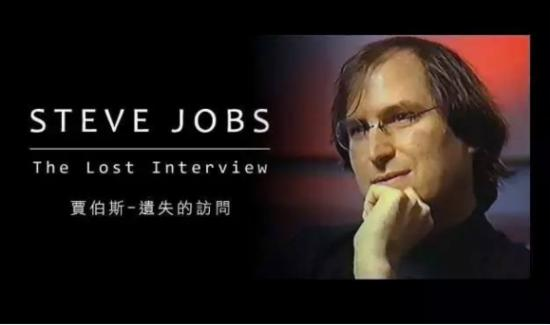

眼神笃定，神情坦然，乔布斯在命运低潮的时候，并没有像一个怨妇。即使在和病魔抗争之时，他也顽强自信。本篇文章是在他逝世后意外发现的生前纪录片的文字简单整理。其中对于生命的价值、商业的本位、产品的灵魂、顶级人才的激励等多角度的讲述更是娓娓道来。很多思考，放在当下，依旧不会过时。

“ 遗失16年的访谈 ”
1995年接受采访时，乔布斯正在经营自己创办的NeXT公司，这也是他的低潮期。18个月后，苹果收购了NeXT，半年后，乔布斯重新掌管苹果。
当年的节目只用了一小段采访，之后母带在从伦敦运往美国的途中遗失。多年来人们一直以为再也看不到完整的内容。直到乔布斯逝世后，导演终于在车库发现了一份拷贝。
“ 光滑的石头是磨出来的 ”
会制造噪音的团队，才会磨出美丽的石头

每次（新产品计划）刚开始的时候，我们都有很多很棒的想法，团队对他们的想法深信不疑。这一刻，我总会想起我小时候的一幕。
街 上有个独居的男人，他已经八十岁了，我接近他，想让他雇我帮他除草。有一天他说，到我的车库来，我有东西给你看。他拉出老旧的磨石机，架子上只有一个马 达、咖啡罐和连接两者的皮带。接着我们到后院捡了一些石头，一些很普通、很不起眼的石头。我们把石头丢进罐里，倒点溶剂，加点粗砂粉。之后他盖上盖子，开 动电机对我说，“明天再来看看”。第二天回到车库，我们打开罐子，看到了打磨得异常圆润魅力的石头!
本来只是寻常不过的石头，却经由互相摩擦，互相砥砺，发出些许噪音，变成美丽光滑的石头。
在我心里，这个比喻最能代表一个竭尽全力工作的团队。集合一群才华洋溢的伙伴，通过辩论、对抗、争吵、合作、互相打磨，磨砺彼此的想法，最终才能创造出美丽的“石头”。
“ 公司的真正价值在于员工 ”
我十二岁时致电惠普的 比尔·休利特（BillHewlett，惠普创办人）。当时电话簿上没有隐藏号码，所以我打开电话簿可以直接查他的名字。他接电话时我说：“嗨，我叫史帝 夫·乔布斯，你不认识我，我今年12岁，我在制作频率计数器，需要一些零件。”他就这样跟我谈了20分钟。我永远都记得他不但给了我零件，还邀请我夏天去 惠普打工。
当时我才12岁，这件事对我产生了不可思议的影响。惠普是我见过的第一家公司，他让我懂得了什么是公司，如何善待员工。
当时人们还不晓得胆固醇。他们每天早上十点会推出满满一车的甜甜圈和咖啡，于是大家停下工作，喝杯咖啡品尝甜甜圈。虽然是些小事，但显然惠普明白公司真正价值在于其员工。

“A级人才，特别对待 ”
A级人才的自尊心，不需要你呵护

我很早便在生活中观察到一件事：人生中大多数事情，平庸与顶尖的差距通常只有二比一，好比纽约的出租车司机，顶尖司机与普通司机之间开车速度的差距大概是30%。
普通汽车和顶尖汽车的差异有多少？也许20%吧。顶级CD播放机和一般CD播放机的差别？我不知道，可能也是20%吧。这种差距很少超过两倍。但是在软件行业还有硬件行业，这种差距可能超过15倍甚至100倍。这种现象很罕见，能进入这个行业我感到很幸运。
我 的成功得益于发现了许多才华横溢、不甘平庸的人才。不是B级、C级人才，而是真正的A级人才。而且我发现只要召集到五个这样的人，他们就会喜欢上彼此合作 的感觉、前所未有的感觉。他们会不愿再与平庸者合作，只召集一样优秀的人。所以你只要找到几个精英，他们就会自动扩大团队。
假如你找到真正顶尖的人才，他们会知道自己真的很棒。你不需要悉心呵护他们自尊心。大家的心思全都放在工作上，因为他们都知道工作表现才是最重要的。
我想，你能替他们做的最重要的事，就是告诉他们哪里还不够好，而且要说得非常清楚，解释为什么，并清晰明了地提醒他们恢复工作状态，同时不能让对方怀疑你的权威性，要用无可置疑的方式告诉他们，你的工作不合格。
这很不容易，所以我总是采取最直截了当的方式。如果你给和我共事过的人做访谈，那些真正杰出的人，会觉得这个方法对他们有益，不过有些人却很痛恨这种方法。但不管这样的模式让人快乐还是痛苦，所有人都一定会说，这是他们人生中最激烈也最珍贵的经历。
“ 用5000个点子磨出一个产品 ”
真正的魔法，是用5000个点子磨出一个产品

我离开后，对苹果最具伤害力的一件事是史考利（苹果前CEO）犯了一个很严重的毛病：认为只要有很棒的想法，事情就有了九成。他以为只要告诉其他人，这里有个好点子，他们就会回到办公室，让想法成真。
问题是，好想法要变成好产品，需要大量的加工。
当你不断改善原来那个“很棒的想法”，概念还会不断成长。改变，结果通常跟你开始想的不一样：因为你越深入细节，你学得越多。
你也会发现。你必须做出难以两全的取舍，才能达到目标：有些功能就是不适合电子产品做，有些功能就是不适合用塑胶、玻璃材料做，或是工厂就是做不到。
设计一个产品，你脑海中可能要记住超过5000个问题，去把这些组合在一起，使劲让这些想法在一个全新的模式下共同运作，达到你要的效果。每天你都会发现新东西。这同时代表新的问题和新的机会。让最终的组合融会贯通，这才是真正的“流程”，也是真正的魔法所在。

“ 做出好产品的关键因素 ”
做出好产品的关键因素，不在于很会管理流程
1984年我们从惠普聘请了一堆人（设计图形界面电脑），我记得和其中一些人大吵一架。他们认为所谓的用户界面，只是在荧幕底部加上软体键盘，他们没有字体大小比例的概念，也没有滑鼠的概念。
他们对我大吼大叫，说鼠标要花五年来设计的，成本高达三百美元。最后我受够了，就去外面找到大卫·凯利（DavidKelly）设计，结果九十天内就有了成本十五美元的滑鼠，而且功能可靠。
当 时我发现，苹果在某方面缺少这种人才，能多方面掌握一个想法的人才。这需要有一个核心团队，但由惠普的人马组成的团队显然不行。这和专业的黑暗面无关，这 是因为人们失去了方向（惠普团队无法进行多方面思考）。随着公司规模越来越大，他们便想复制最初的成功。并且许多人认为当初成功的过程，一定有其奇妙之 处，于是他们开始尝试把当年的成功经验变成制度。
不久人们便感到困惑，为什么制度本身变成了答案？这大概是为什么IBM会失败的原因。IBM拥有最好的制度管理人员，但他们忘了设计流程的目的是为了寻找最棒的答案。
苹果也有了这种状况，我们之中很多人很会管理流程，却不知如何寻找答案。顶尖的人会主动寻找最棒的答案，虽然他们是最难管理的人，但我依然乐于同他们一起工作。
“我们不羞于窃取伟大的想法 ”

你问我对产品的直觉从哪里来？这最终得由你的品味来决定。你要熟悉人类在各领域的优秀成果，尝试将之融入你在做的事情里。毕加索曾说过，“拙工抄，巧匠盗”，我从来不觉得借鉴别的好创意可耻。
我 觉得麦金塔成功的原因，在于其创造者是音乐家、诗人和艺术家、动物学家甚至历史学家，他们正好也是全球最棒的电脑科学家，所以我们才如此出色。如果没投身 电脑科学，他们也能在其他领域创造奇迹。大家各自贡献自己的专业知识，麦金塔因此吸收了各个领域的优秀成果，否则的话他很有可能是一款非常狭隘的产品。
“ 我创业从来不是为了钱 ”
公 司拥有独占性的市场地位，能让公司更成功的人，是业务和行销人员，所以最后变成他们经营公司，而产品人员被边缘化，导致公司忘记做出好产品的重要性。当初 是对产品的敏锐和创意，让他们独霸市场，后来却因经营人员而消失殆尽。他们对产品好坏没有概念，不懂将好构想变成好产品的工艺，他们也没有真的想帮客户的 心。
在业界打滚这么多年，我常问别人你为什么做某些事，得到的答案都是：事情就是这样。没有人知道他们为什么这样做。
做生意没有人会真的深思熟虑，这就是我的体会和认知。因此如果你愿意问问题，仔细思考，认真努力，你很快就能学会做生意，这不是多难的事情。
我身价超过100万美元时才23岁；24岁身价超过千万美元；25岁就超过亿万美元。但钱没那么重要，因为我创业从来就不是为了钱。
当然，有钱是很棒的事情，因为它让你有能力做很多事。你可以投资短期无法回收的创意和想法，但最重要的是公司、是人、是我们制作的产品以及产品对人们带来的好处，所以我不常把钱放在心上。
我没卖掉过一张苹果的股票，因为我真的相信公司会有长期发展。
- 推荐图文
- 推荐人物
- 推荐企业